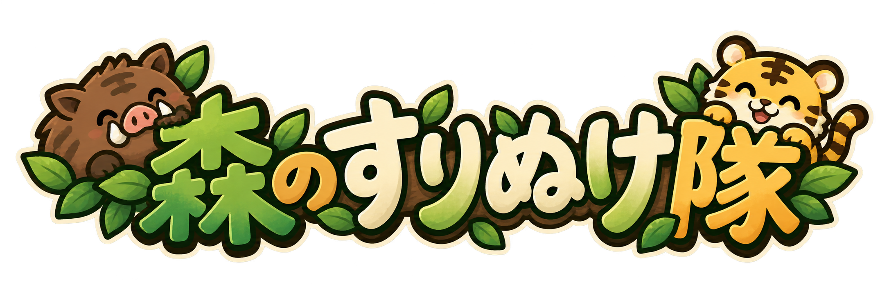

猪●●●●●
生存時間0.0 秒
スコア0
相棒を選んで、森へ出発。LV 1
CHOOSE YOUR BUDDY
今日の相棒は？
盤面のどこからでも、押したままドラッグ。
PCは矢印キー / WASD。攻撃操作はありません。
岩 −1 ／ 銃弾 −2 ／ 木の実 ＋1
TAKE A BREATHER
木陰で、ひと休み。
森の時間も、いまは止まっています。
NICE LITTLE ADVENTURE
おつかれさま！
BGMは初期オフ。オンにするとプレイ中に流れます。
効果音は初期オフ。被弾・回復・発射にそれぞれ違う音が鳴ります。
0.0秒0.0秒
自己スコア TOP 5（猪・虎）
猪の記録
| 順位 | 点数 | 生存時間 |
|---|
虎の記録
| 順位 | 点数 | 生存時間 |
|---|
1プレイにつき1件。プレイ中は同じ記録を更新します。同点は生存時間が長い順です。記録はこのブラウザ内に保存されます。
遊び方
操作方法
スマホ：盤面のどこからでもドラッグして移動。指を離すと止まります。
PC：矢印キー／WASDで移動。
ルール
岩や銃弾を避けて、できるだけ長く生き残りましょう。長く生き残るほど高得点です。
- 岩に当たると体力−1、銃弾は−2。体力が0になると終了。
- 木の実を取ると体力＋1。満タンのときは取らずに残ります。
- 照準と点線は銃弾の予告。点線の外へ避けましょう。